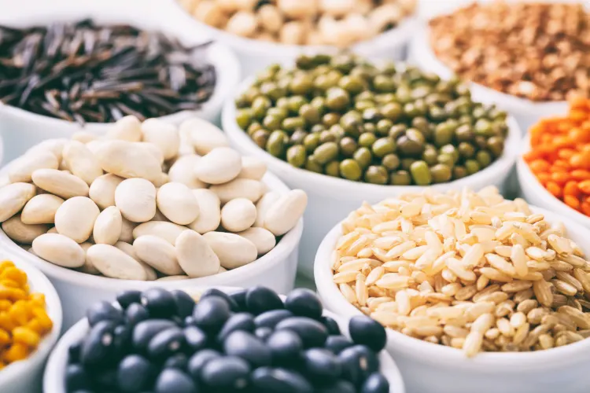

Tech
Apple iPhone 16 series
25 AUG 2024
Apple fans worldwide have long learned to mark early September in the calendars for the new iPhone generation. 2024 looks set to see larger Pro variants, with 6.3in and 6.9in screens rumoured. They could also include a dedicated “capture” button for content creators, alongside the returning Action button – which itself will filter down to the standard iPhone models.
 MKHB
MKHB

Food
Climate-Conscious Foods
31 Aug 2024
Sustainability will continue as an element of many food trends in 2024, just as it was a key food trend of the past few years. The availability of ingredients farmed responsibly with lower-impact growing methods will expand the movement in important ways.Leading the charge: grains and other crops grown with concern for soil health, creating an easier environment for continued cultivation. Increasing interest in plant-forward dining will also carry forward the idea of careful cuisine. And the explosion of non-meat protein alternatives continuing into next year will highlight a desire for mindful options among the many food trends of 2024. Learning to prepare food this way may be an adjustment, but once you get started, you'll find the options are abundant.
MKHB

Food
From mayo to mash, 5 ways to use saffron
28 AUG 2024
Saffron is a spice that’s long been revered across the globe, captivating hearts and palates with its deep-red hue and complex flavour. Originating from the delicate stigma of the saffron crocus flower, it transforms the ordinary into the extraordinary, infusing dishes with a subtle, earthy sweetness and floral notes that dance on the palate.
MKHB
news
Top news
1 Sept 2024
Bajaj Housing Finance IPO to open between September 9-11; to raise Rs 6,560 crore
MKHB

Tech
Android 15 Release Date For Pixel Phones Could Be Delayed
1 SEPT 2024
Pixel phone users might have to wait a little longer before the Android 15 update rolls out for their devices. Google traditionally launches the new Pixel models with the latest version but this year’s August release has forced the company to change its plans and reports suggest it might have to push the roll out of Android 15 to its usual timeline.
MKHB

News
archery paralympics
1 Sept 2024
The sport of Para archery is intwined with the history of the Paralympic movement itself. Like many other Paralympic sports, it was first used as a rehabilitation activity for injured veterans by Dr. Ludwig Guttmann at Stoke Mandeville Hospital in the 1940s.Dr. Ludwig held the first archery tournament for English patients at the hospital in 1948, with the first international team joining in 1952. Para archery was present at the first Paralympic Games in Rome in 1960, and has remained on the programme ever since.
MKHB
Tech
OpenAI Close to Releasing Strawberry AI on ChatGPT; ‘Orion’ Could Be GPT-5
28 AUG 2024
According to two sources familiar with the development, OpenAI may launch Strawberry to ChatGPT this fall. The Information has learned that the hot AI startup has already demoed Strawberry to US national security officials. The report further says that Strawberry was able to solve the New York Times “Connections” word puzzle in an internal demo.
MKHB
News
Who is IC 814 Hijack flight Captain Devi Sharan? The hero of 1999 hijack, played by Vijay Varma in Netflix series
29 AUG 2024
Captain Devi Sharan, the pilot of the 1999 hijacked Indian Airlines Flight IC 814, is once again in the spotlight thanks to his portrayal by Vijay Varma in the Netflix series "IC 814: The Kandahar Hijack." The series has rekindled interest in the dramatic events of December 24, 1999, when the flight was seized by terrorists
MKHB

Food
60 Salad Recipes Everyone Will Love
30 AUG 2024
It’s salad time! The days of the boring salad are over. Salads can be some of the best ways to eat colorful, nutrient-dense foods. But it can be hard to find the right salad recipes that are easy and delicious enough to justify the effort.As two cookbook authors and recipe experts, here are our very best salad recipes, guaranteed to be favorites for years to come! You’ll see a variety of types of salads: green salads, vegetable salads, grain salads, and pasta salads. There are salad ideas for a variety of seasons, but most of these easy salad recipes will work in any season. These are the recipes we turn to time and time again: we hope you’ll love them as much as we do!
MKHB